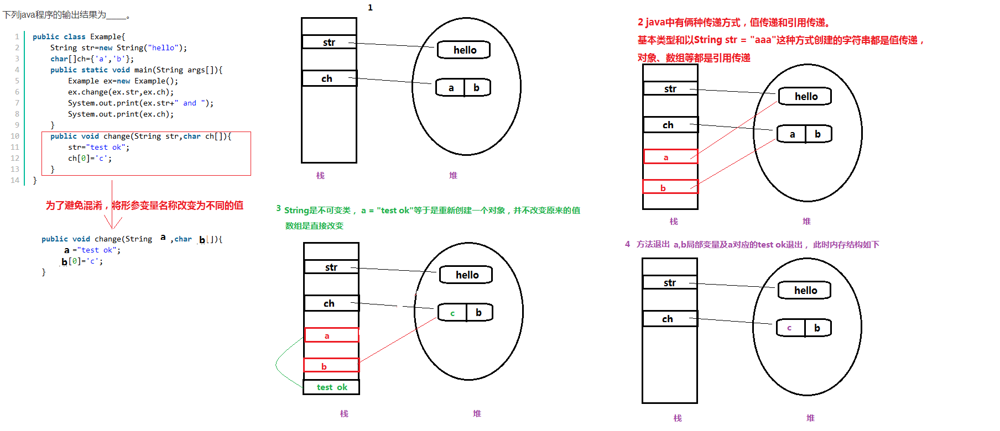

值传递和引用传递
Java 中在参数传递时有2种方式:
- 值传递：值传递是指在调用函数时将实际参数复制一份传递到函数中，这样在函数中如果对参数进行修改，将不会影响到实际参数。简单来说就是直接复制了一份数据过去，因为是直接复制，所以这种方式在传递时如果数据量非常大的话，运行效率自然就变低了，所以java在传递数据量很小的数据是值传递，比如java中的各种基本类型：int,float,double,boolean等类型的
- 引用传递：引用传递其实就弥补了上面说的不足，如果每次传参数的时候都复制一份的话，如果这个参数占用的内存空间太大的话，运行效率会很底下，所以引用传递就是直接把内存地址传过去，也就是说引用传递时，操作的其实都是源数据，这样的话修改有时候会冲突，记得用逻辑弥补下就好了。具体的数据类型就比较多了，比如Object，二维数组，List，Map等除了基本类型的参数都是引用传递。
与此对应的，Java 中数据类型我们也把它们分为基本数据类型和引用数据类型。
- 基本数据类型
- 整型：byte，short，int，long
- 浮点型：float，double
- 字符型：char
- 布尔型：boolean
- 引用数据类型
- 数组
- 类
- 接口
一般情况下，在数据做为参数传递的时候，基本数据类型是值传递，引用数据类型是引用传递（地址传递）。
String类型传递
String 在作为参数传递时比较特殊，我们先来看一段代码：
public class Example{
String str=new String("hello");
char[]ch={'a','b'};
public static void main(String args[]){
Example ex=new Example();
ex.change(ex.str,ex.ch);
System.out.print(ex.str+" and ");
System.out.print(ex.ch);
}
public void change(String str,char ch[]){
str="test ok";
ch[0]='c';
}
}
输出的结果是：hello and cb
数组输出 cb 很容易理解，数组是引用传递，change 中对数组的操作相当于改变了堆上的数组的值。
那么String也是对象，属于引用传递，对它的修改为什么没有改变原来的对象呢？为什么看起来像值传递呢？
在 String 的文档中有介绍：
Strings are constant; their values cannot be changed after they are created.
通过源码我们还会发现 String 类是final类型的，是不能被继承和修改的。每一次内容的更改都是重现创建出来的新对象。
文档中还有介绍：
String str = "abc";
等同于：
char data[] = {'a', 'b', 'c'};
String str = new String(data);
下面用图来解释一下上面的代码：

change 方法的 str 参数本来就是 ex.str 所指向地址的一个 copy，当 change 方法执行完毕时，str 所指向的地址值已经改变。而 str 本来的地址值就是copy过来的副本，所以并不能改变 ex.str 这个饮用所指向的对象的值。
String 的参数传递类似：
class Person {
String name;
public Person(String name) {
this.name = name;
}
}
public class Test {
public static void main(String[] args) {
Person p = new Person("张三");
change(p);
System.out.println(p.name);
}
public static void change(Person p) {
Person person = new Person("李四");
p = person;
}
}
运行的结果是：
张三
方法的参数传递机制
方法的参数分为两种：
- 形式参数：定义方法时声明的参数
- 实际参数：调用方法时传给形参的具体参数值
那么，Java的实参值是如何传入方法的呢？这是由 Java 方法的参数传递机制来控制的，Java 里方法的参数传递方式只有一种：值传递。 所谓的值传递就是将实际参数值的副本（复制品）传入方法内，而参数本身不会收到任何影响。 结合上面的例子，简单点将就是说，如果是引用类型作为参数来传递，这时传递的时引用类型指向对象的地址的一个copy，如果你这个时候修改它的属性什么的，虽然它是一个copy，但它们执行同一个对象的内存地址，那么修改的仍然是同一个对象。这时如果你给它重新赋值，就是修改它指向的地址，那么只是修改了这个copy的地址，原来的引用指向的地址仍然是不受影响的。
如果将change方法的代码改成：
public void change(Person p) {
//Person person = new Person("李四");
//p = person;
p.name = "李四";
}
运行的结果是：
李四
总结
- 值传递的时候，将实参的值，copy 一份给形参。
- 引用传递的时候，将实参的地址值，copy 一份给形参。
也就是说，不管是值传递还是引用传递，形参拿到的仅仅是实参的副本，而不是实参本身。
参考
《疯狂 Java 讲义》